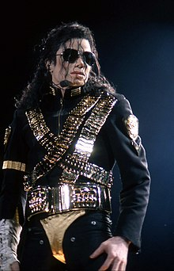

Jackson en su gira Dangerous World Tour en septiembre de 1993.
Michael Joseph Jackson (Gary, Indiana, 29 de agosto de 1958-Los Ángeles, 25 de junio de 2009), fue un cantante, compositor, productor y bailarín estadounidense. Apodado como el Rey del Pop, sus contribuciones y reconocimiento en la historia de la música y el baile durante más de cuatro décadas, así como su publicitada vida personal, lo convirtieron en una figura internacional en la cultura popular. Su música incluye una amplia acepción de géneros como el pop, rhythm and blues (soul y funk), rock, disco y dance, y es reconocido como el «artista musical más exitoso de todos los tiempos» por los Guinness World Records.
- En 1984 Michael Jackson recibió diversos y destacados reconocimientos a lo largo de su carrera, entre ellos se encuentran dos estrellas en el Paseo de la Fama de Hollywood, una con Jackson 5 y otra como solista, obtuvo el premio World Music Awards al artista pop más exitoso del milenio, el premio AMA al artista de la década y el premio Bambi al artista del milenio.
- Fue incluido dos veces en el Rock and Roll Hall of Fame: en 1997 por el trabajo que realizó como miembro de la banda The Jackson 5 y en 2001 por los logros que tuvo como solista. Jackson también fue incluido en el Salón de la Fama de los Compositores en 2002
- También se le otorgó el Récord Guinness ' como el artista más exitoso de todos los tiempos. Además, ganó trece premios Grammy (sin contar el Living Legend de 1993 y el póstumo Lifetime Achivement de 2010) y veintiséis premios AMA, trece de sus sencillos llegaron al primer puesto de Billboard Hot 100 y ha vendido mundialmente más de 400 millones de sus producciones musicales, lo que lo hace en uno de los artistas más exitosos de todos los tiempos.
- En 2009, el año de su muerte el Museo Grammy en Los Ángeles entró en acción con la inauguración de la exposición especial, «Michel Jackson: A Musical Legacy», que sirvió como un seguimiento de «Michael Jackson: HIStyle», exhibición que se abrió en febrero de ese año.
- En la 52ª edición de los premios Grammy en el 2010, los ganadores del Grammy Smokey Robinson, Celine Dion, Carrie Underwood, Usher y Jennifer Hudson se unieron para rendirle homenaje con una versión 3-D de todas las estrellas de su canción «Earth Song».